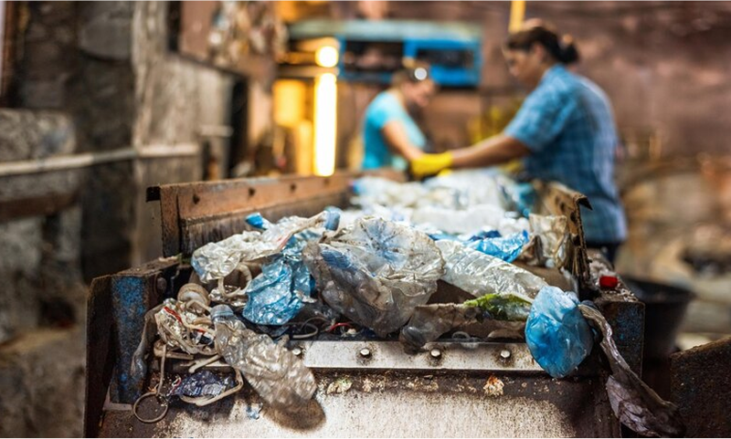
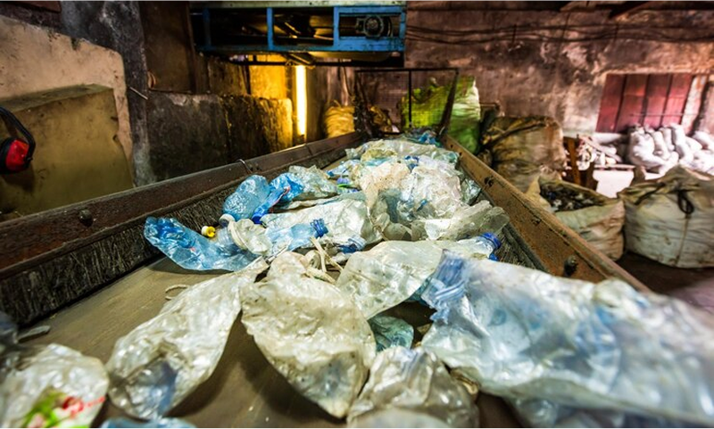

Under this Project, we have created multiple Plastic Recycling and
Recovery Facilities(currently 8 operating lines) primarily located in
the Western part of India covering the states of Maharashtra, Gujarat,
and Goa. Currently, these 8 recycling lines can process up to 500-600
MT/Month(6000-7,000 MT/year) of different varieties of Polyoliphins
(LDPE, HDPE, PP, HM in rigid and flexible forms) plastic waste at
full capacity.
These facilities are primarily designed to process low-value flexible plastic wastes like carry bags, garbage bags, and other kinds of packaging material made from flexible plastics. The facility receives its feedstock from different Material Recovery Facilities(MRFs) both privately run and with Municipal Bodies in nearby cities. This helps in achieving better resource recovery and better financial sustainability at the material recovery facilities as well. Thus they are also strategically located so that we can cover maximum parts of Maharashtra Goa and Gujarat as raw material sources.
However, following the policy changes in the plastic waste management rules in the country where brands and producers are mandated to use recycled Polymers in their packaging material, one of our facilities based in Nagpur has been dedicated to producing good quality recycled Polymer granules. This can be used for higher applications including HD blow molding or PPCP injection molding for different non-food grade packaging applications to begin with.
These facilities employ nearly 200 workers directly and also reach out and engage with 1500 waste workers employed or connected with the source supply chains including MRFs and other Plastic Aggregation facilities including different types of waste workers(waste pickers, sorters, municipal or Panchayat collection workers), etc.
These facilities are primarily designed to process low-value flexible plastic wastes like carry bags, garbage bags, and other kinds of packaging material made from flexible plastics. The facility receives its feedstock from different Material Recovery Facilities(MRFs) both privately run and with Municipal Bodies in nearby cities. This helps in achieving better resource recovery and better financial sustainability at the material recovery facilities as well. Thus they are also strategically located so that we can cover maximum parts of Maharashtra Goa and Gujarat as raw material sources.
However, following the policy changes in the plastic waste management rules in the country where brands and producers are mandated to use recycled Polymers in their packaging material, one of our facilities based in Nagpur has been dedicated to producing good quality recycled Polymer granules. This can be used for higher applications including HD blow molding or PPCP injection molding for different non-food grade packaging applications to begin with.
These facilities employ nearly 200 workers directly and also reach out and engage with 1500 waste workers employed or connected with the source supply chains including MRFs and other Plastic Aggregation facilities including different types of waste workers(waste pickers, sorters, municipal or Panchayat collection workers), etc.

Activities Performed:
-
Infrastructure development :
New Plastic Recycling facilities are being set up to handle low-value plastic waste. We have currently 8 operational recycling lines.
-
Technology and Innovation :
This project has been standardizing ways to collect and recycle low-value plastics in a traceable and organized manner. Better recycling techniques to increase the circularity of plastic by not downcycling it but rather recycling/upcycling is also an activity of the project.
-
Education, engagement, and ownership :
A variety of programs targeting health, safety, financial, and legal literacy, alongside Self-Help Group formation have been developed for the informal waste workers forming part of the waste supply chain to see a more equitable distribution of the opportunities in the larger plastic recycling ecosystem.
-
Environment :
These facilities have been trying to better the air and water effluent management system as per the pollution control guidelines, as well as authorized disposal of the solid non-recyclable portion of the waste. The program will nevertheless ensure higher plastic waste recovery from the environment and recycling ensuring a circular economy.
